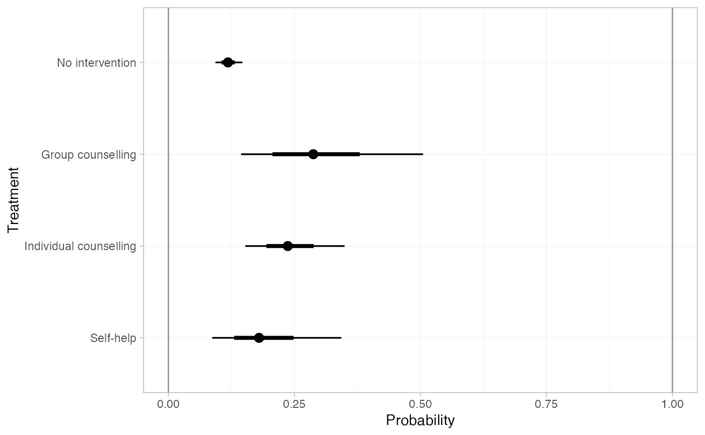
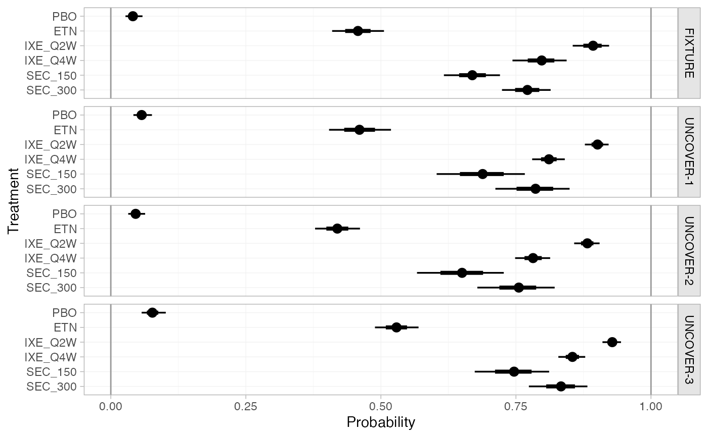
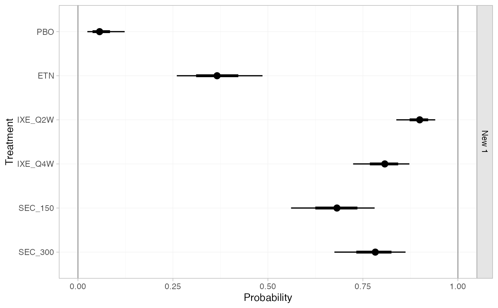

Obtain predictions of absolute effects from NMA models fitted with nma().
For example, if a model is fitted to binary data with a logit link, predicted
outcome probabilities or log odds can be produced.
Usage
# S3 method for stan_nma
predict(
object,
...,
baseline = NULL,
newdata = NULL,
study = NULL,
trt_ref = NULL,
type = c("link", "response"),
level = c("aggregate", "individual"),
baseline_type = c("link", "response"),
baseline_level = c("individual", "aggregate"),
probs = c(0.025, 0.25, 0.5, 0.75, 0.975),
predictive_distribution = FALSE,
summary = TRUE
)Arguments
- object
A
stan_nmaobject created bynma().- ...
Additional arguments, passed to
uniroot()for regression models ifbaseline_level = "aggregate".- baseline
An optional
distr()distribution for the baseline response (i.e. intercept), about which to produce absolute effects. IfNULL, predictions are produced using the baseline response for each study in the network with IPD or arm-based AgD.For regression models, this may be a list of
distr()distributions of the same length as the number of studies innewdata(possibly named by the study names, or otherwise in order of appearance innewdata).Use the
baseline_typeandbaseline_levelarguments to specify whether this distribution is on the response or linear predictor scale, and (for ML-NMR or models including IPD) whether this applies to an individual at the reference level of the covariates or over the entirenewdatapopulation, respectively. For example, in a model with a logit link withbaseline_type = "link", this would be a distribution for the baseline log odds of an event.Use the
trt_refargument to specify which treatment this distribution applies to.- newdata
Only required if a regression model is fitted and
baselineis specified. A data frame of covariate details, for which to produce predictions. Column names must match variables in the regression model.If
level = "aggregate"this should either be a data frame with integration points as produced byadd_integration()(one row per study), or a data frame with individual covariate values (one row per individual) which are summarised over.If
level = "individual"this should be a data frame of individual covariate values, one row per individual.If
NULL, predictions are produced for all studies with IPD and/or arm-based AgD in the network, depending on the value oflevel.- study
Column of
newdatawhich specifies study names or IDs. When not specified: ifnewdatacontains integration points produced byadd_integration(), studies will be labelled sequentially by row; otherwise data will be assumed to come from a single study.- trt_ref
Treatment to which the
baselineresponse distribution refers, ifbaselineis specified. By default, the baseline response distribution will refer to the network reference treatment. Coerced to character string.- type
Whether to produce predictions on the
"link"scale (the default, e.g. log odds) or"response"scale (e.g. probabilities).- level
The level at which predictions are produced, either
"aggregate"(the default), or"individual". Ifbaselineis not specified, predictions are produced for all IPD studies in the network iflevelis"individual"or"aggregate", and for all arm-based AgD studies in the network iflevelis"aggregate".- baseline_type
When a
baselinedistribution is given, specifies whether this corresponds to the"link"scale (the default, e.g. log odds) or"response"scale (e.g. probabilities).- baseline_level
When a
baselinedistribution is given, specifies whether this corresponds to an individual at the reference level of the covariates ("individual", the default), or from an (unadjusted) average outcome on the reference treatment in thenewdatapopulation ("aggregate"). Ignored for AgD NMA, since the only option is"aggregate"in this instance.- probs
Numeric vector of quantiles of interest to present in computed summary, default
c(0.025, 0.25, 0.5, 0.75, 0.975)- predictive_distribution
Logical, when a random effects model has been fitted, should the predictive distribution for absolute effects in a new study be returned? Default
FALSE.- summary
Logical, calculate posterior summaries? Default
TRUE.
Value
A nma_summary object if summary = TRUE, otherwise a list
containing a 3D MCMC array of samples and (for regression models) a data
frame of study information.
See also
plot.nma_summary() for plotting the predictions.
Examples
## Smoking cessation
# \donttest{
# Run smoking RE NMA example if not already available
if (!exists("smk_fit_RE")) example("example_smk_re", run.donttest = TRUE)
# }
# \donttest{
# Predicted log odds of success in each study in the network
predict(smk_fit_RE)
#> ---------------------------------------------------------------------- Study: 1 ----
#>
#> mean sd 2.5% 25% 50% 75% 97.5%
#> pred[1: No intervention] -2.78 0.33 -3.48 -2.99 -2.77 -2.55 -2.17
#> pred[1: Group counselling] -1.67 0.51 -2.70 -2.01 -1.68 -1.34 -0.66
#> pred[1: Individual counselling] -1.93 0.39 -2.72 -2.19 -1.93 -1.68 -1.19
#> pred[1: Self-help] -2.29 0.51 -3.32 -2.62 -2.28 -1.94 -1.26
#> Bulk_ESS Tail_ESS Rhat
#> pred[1: No intervention] 4972 2811 1
#> pred[1: Group counselling] 2449 2477 1
#> pred[1: Individual counselling] 2582 2570 1
#> pred[1: Self-help] 2002 2663 1
#>
#> ---------------------------------------------------------------------- Study: 2 ----
#>
#> mean sd 2.5% 25% 50% 75% 97.5%
#> pred[2: No intervention] -2.57 0.78 -4.17 -3.06 -2.56 -2.08 -1.04
#> pred[2: Group counselling] -1.46 0.78 -3.03 -1.97 -1.46 -0.95 0.07
#> pred[2: Individual counselling] -1.72 0.76 -3.25 -2.21 -1.71 -1.24 -0.23
#> pred[2: Self-help] -2.07 0.78 -3.68 -2.57 -2.06 -1.58 -0.57
#> Bulk_ESS Tail_ESS Rhat
#> pred[2: No intervention] 2702 2455 1
#> pred[2: Group counselling] 3265 2727 1
#> pred[2: Individual counselling] 3050 2616 1
#> pred[2: Self-help] 3401 2638 1
#>
#> ---------------------------------------------------------------------- Study: 3 ----
#>
#> mean sd 2.5% 25% 50% 75% 97.5%
#> pred[3: No intervention] -2.14 0.12 -2.37 -2.22 -2.14 -2.06 -1.93
#> pred[3: Group counselling] -1.04 0.45 -1.89 -1.33 -1.05 -0.75 -0.13
#> pred[3: Individual counselling] -1.29 0.26 -1.77 -1.47 -1.31 -1.13 -0.77
#> pred[3: Self-help] -1.65 0.41 -2.44 -1.92 -1.65 -1.38 -0.80
#> Bulk_ESS Tail_ESS Rhat
#> pred[3: No intervention] 9154 2794 1
#> pred[3: Group counselling] 2055 2755 1
#> pred[3: Individual counselling] 1465 2230 1
#> pred[3: Self-help] 2056 2576 1
#>
#> ---------------------------------------------------------------------- Study: 4 ----
#>
#> mean sd 2.5% 25% 50% 75% 97.5%
#> pred[4: No intervention] -4.06 0.57 -5.24 -4.42 -4.02 -3.66 -3.02
#> pred[4: Group counselling] -2.95 0.70 -4.40 -3.39 -2.94 -2.47 -1.63
#> pred[4: Individual counselling] -3.21 0.58 -4.41 -3.58 -3.18 -2.82 -2.15
#> pred[4: Self-help] -3.56 0.68 -4.95 -3.99 -3.55 -3.10 -2.27
#> Bulk_ESS Tail_ESS Rhat
#> pred[4: No intervention] 4375 2817 1
#> pred[4: Group counselling] 3466 2946 1
#> pred[4: Individual counselling] 3638 2771 1
#> pred[4: Self-help] 3452 3012 1
#>
#> ---------------------------------------------------------------------- Study: 5 ----
#>
#> mean sd 2.5% 25% 50% 75% 97.5%
#> pred[5: No intervention] -2.16 0.14 -2.44 -2.25 -2.16 -2.06 -1.89
#> pred[5: Group counselling] -1.05 0.45 -1.91 -1.36 -1.07 -0.76 -0.12
#> pred[5: Individual counselling] -1.31 0.27 -1.83 -1.49 -1.32 -1.14 -0.75
#> pred[5: Self-help] -1.66 0.41 -2.45 -1.94 -1.66 -1.40 -0.83
#> Bulk_ESS Tail_ESS Rhat
#> pred[5: No intervention] 6653 2919 1
#> pred[5: Group counselling] 1984 2594 1
#> pred[5: Individual counselling] 1484 2232 1
#> pred[5: Self-help] 1838 2614 1
#>
#> ---------------------------------------------------------------------- Study: 6 ----
#>
#> mean sd 2.5% 25% 50% 75% 97.5%
#> pred[6: No intervention] -3.42 0.71 -4.94 -3.86 -3.35 -2.93 -2.18
#> pred[6: Group counselling] -2.31 0.79 -3.95 -2.81 -2.28 -1.78 -0.89
#> pred[6: Individual counselling] -2.57 0.70 -4.07 -3.01 -2.52 -2.09 -1.34
#> pred[6: Self-help] -2.92 0.81 -4.65 -3.42 -2.87 -2.39 -1.45
#> Bulk_ESS Tail_ESS Rhat
#> pred[6: No intervention] 3285 2545 1
#> pred[6: Group counselling] 3503 2784 1
#> pred[6: Individual counselling] 3373 2756 1
#> pred[6: Self-help] 2872 2914 1
#>
#> ---------------------------------------------------------------------- Study: 7 ----
#>
#> mean sd 2.5% 25% 50% 75% 97.5%
#> pred[7: No intervention] -3.03 0.45 -4.02 -3.31 -3.00 -2.71 -2.26
#> pred[7: Group counselling] -1.92 0.60 -3.15 -2.32 -1.89 -1.52 -0.78
#> pred[7: Individual counselling] -2.18 0.47 -3.18 -2.49 -2.15 -1.85 -1.33
#> pred[7: Self-help] -2.54 0.59 -3.75 -2.90 -2.52 -2.14 -1.44
#> Bulk_ESS Tail_ESS Rhat
#> pred[7: No intervention] 3877 2824 1
#> pred[7: Group counselling] 2956 2773 1
#> pred[7: Individual counselling] 3060 2244 1
#> pred[7: Self-help] 2646 2239 1
#>
#> ---------------------------------------------------------------------- Study: 8 ----
#>
#> mean sd 2.5% 25% 50% 75% 97.5%
#> pred[8: No intervention] -2.71 0.60 -4.01 -3.07 -2.66 -2.29 -1.68
#> pred[8: Group counselling] -1.60 0.71 -3.14 -2.05 -1.56 -1.11 -0.29
#> pred[8: Individual counselling] -1.86 0.60 -3.13 -2.24 -1.82 -1.44 -0.82
#> pred[8: Self-help] -2.21 0.70 -3.65 -2.67 -2.17 -1.73 -0.93
#> Bulk_ESS Tail_ESS Rhat
#> pred[8: No intervention] 3262 2794 1
#> pred[8: Group counselling] 3517 3114 1
#> pred[8: Individual counselling] 3411 2755 1
#> pred[8: Self-help] 2951 2907 1
#>
#> ---------------------------------------------------------------------- Study: 9 ----
#>
#> mean sd 2.5% 25% 50% 75% 97.5%
#> pred[9: No intervention] -1.84 0.42 -2.69 -2.11 -1.82 -1.54 -1.07
#> pred[9: Group counselling] -0.73 0.60 -1.88 -1.12 -0.74 -0.34 0.45
#> pred[9: Individual counselling] -0.99 0.46 -1.91 -1.30 -0.99 -0.68 -0.10
#> pred[9: Self-help] -1.34 0.57 -2.47 -1.71 -1.35 -0.97 -0.22
#> Bulk_ESS Tail_ESS Rhat
#> pred[9: No intervention] 4577 2631 1
#> pred[9: Group counselling] 2942 2760 1
#> pred[9: Individual counselling] 3075 2618 1
#> pred[9: Self-help] 2543 2700 1
#>
#> --------------------------------------------------------------------- Study: 10 ----
#>
#> mean sd 2.5% 25% 50% 75% 97.5%
#> pred[10: No intervention] -2.08 0.12 -2.32 -2.16 -2.08 -2.00 -1.85
#> pred[10: Group counselling] -0.98 0.44 -1.83 -1.27 -1.00 -0.69 -0.09
#> pred[10: Individual counselling] -1.24 0.26 -1.74 -1.41 -1.25 -1.07 -0.70
#> pred[10: Self-help] -1.59 0.41 -2.37 -1.86 -1.59 -1.33 -0.75
#> Bulk_ESS Tail_ESS Rhat
#> pred[10: No intervention] 10685 2842 1
#> pred[10: Group counselling] 2020 2222 1
#> pred[10: Individual counselling] 1550 2016 1
#> pred[10: Self-help] 1828 2556 1
#>
#> --------------------------------------------------------------------- Study: 11 ----
#>
#> mean sd 2.5% 25% 50% 75% 97.5%
#> pred[11: No intervention] -3.62 0.24 -4.11 -3.78 -3.62 -3.46 -3.19
#> pred[11: Group counselling] -2.52 0.48 -3.45 -2.84 -2.53 -2.20 -1.57
#> pred[11: Individual counselling] -2.78 0.33 -3.45 -2.99 -2.77 -2.56 -2.13
#> pred[11: Self-help] -3.13 0.44 -3.98 -3.41 -3.13 -2.85 -2.26
#> Bulk_ESS Tail_ESS Rhat
#> pred[11: No intervention] 7900 2549 1
#> pred[11: Group counselling] 2347 2348 1
#> pred[11: Individual counselling] 2229 2365 1
#> pred[11: Self-help] 2213 2546 1
#>
#> --------------------------------------------------------------------- Study: 12 ----
#>
#> mean sd 2.5% 25% 50% 75% 97.5%
#> pred[12: No intervention] -2.22 0.13 -2.48 -2.30 -2.22 -2.13 -1.97
#> pred[12: Group counselling] -1.11 0.45 -1.96 -1.42 -1.13 -0.82 -0.21
#> pred[12: Individual counselling] -1.37 0.26 -1.87 -1.54 -1.38 -1.21 -0.82
#> pred[12: Self-help] -1.72 0.41 -2.51 -2.00 -1.73 -1.45 -0.89
#> Bulk_ESS Tail_ESS Rhat
#> pred[12: No intervention] 7413 3129 1
#> pred[12: Group counselling] 1979 2584 1
#> pred[12: Individual counselling] 1455 2072 1
#> pred[12: Self-help] 1937 2694 1
#>
#> --------------------------------------------------------------------- Study: 13 ----
#>
#> mean sd 2.5% 25% 50% 75% 97.5%
#> pred[13: No intervention] -2.67 0.45 -3.60 -2.95 -2.65 -2.37 -1.84
#> pred[13: Group counselling] -1.56 0.62 -2.77 -1.98 -1.57 -1.15 -0.35
#> pred[13: Individual counselling] -1.82 0.49 -2.79 -2.14 -1.82 -1.50 -0.87
#> pred[13: Self-help] -2.17 0.60 -3.34 -2.57 -2.17 -1.77 -0.99
#> Bulk_ESS Tail_ESS Rhat
#> pred[13: No intervention] 4955 2727 1
#> pred[13: Group counselling] 2962 2911 1
#> pred[13: Individual counselling] 3359 2924 1
#> pred[13: Self-help] 3043 2942 1
#>
#> --------------------------------------------------------------------- Study: 14 ----
#>
#> mean sd 2.5% 25% 50% 75% 97.5%
#> pred[14: No intervention] -2.42 0.23 -2.89 -2.56 -2.41 -2.26 -1.99
#> pred[14: Group counselling] -1.31 0.48 -2.24 -1.63 -1.32 -1.00 -0.33
#> pred[14: Individual counselling] -1.57 0.32 -2.20 -1.78 -1.56 -1.37 -0.94
#> pred[14: Self-help] -1.92 0.46 -2.82 -2.22 -1.92 -1.63 -1.00
#> Bulk_ESS Tail_ESS Rhat
#> pred[14: No intervention] 6074 3142 1
#> pred[14: Group counselling] 2095 2746 1
#> pred[14: Individual counselling] 2023 2428 1
#> pred[14: Self-help] 2125 2793 1
#>
#> --------------------------------------------------------------------- Study: 15 ----
#>
#> mean sd 2.5% 25% 50% 75% 97.5%
#> pred[15: No intervention] -2.70 0.75 -4.33 -3.14 -2.64 -2.18 -1.43
#> pred[15: Group counselling] -1.60 0.73 -3.17 -2.04 -1.55 -1.11 -0.28
#> pred[15: Individual counselling] -1.86 0.75 -3.50 -2.30 -1.80 -1.34 -0.56
#> pred[15: Self-help] -2.21 0.80 -3.96 -2.69 -2.16 -1.65 -0.78
#> Bulk_ESS Tail_ESS Rhat
#> pred[15: No intervention] 3308 2062 1
#> pred[15: Group counselling] 3634 2878 1
#> pred[15: Individual counselling] 3380 2159 1
#> pred[15: Self-help] 3085 2527 1
#>
#> --------------------------------------------------------------------- Study: 16 ----
#>
#> mean sd 2.5% 25% 50% 75% 97.5%
#> pred[16: No intervention] -2.61 0.34 -3.35 -2.84 -2.60 -2.38 -1.98
#> pred[16: Group counselling] -1.51 0.54 -2.57 -1.86 -1.52 -1.14 -0.46
#> pred[16: Individual counselling] -1.77 0.41 -2.58 -2.04 -1.77 -1.49 -0.96
#> pred[16: Self-help] -2.12 0.47 -3.03 -2.43 -2.12 -1.80 -1.19
#> Bulk_ESS Tail_ESS Rhat
#> pred[16: No intervention] 6445 3196 1
#> pred[16: Group counselling] 2754 2253 1
#> pred[16: Individual counselling] 3154 2988 1
#> pred[16: Self-help] 2601 3146 1
#>
#> --------------------------------------------------------------------- Study: 17 ----
#>
#> mean sd 2.5% 25% 50% 75% 97.5%
#> pred[17: No intervention] -2.38 0.11 -2.60 -2.45 -2.37 -2.30 -2.17
#> pred[17: Group counselling] -1.27 0.45 -2.11 -1.57 -1.29 -0.98 -0.36
#> pred[17: Individual counselling] -1.53 0.26 -2.01 -1.70 -1.54 -1.37 -0.99
#> pred[17: Self-help] -1.88 0.41 -2.66 -2.15 -1.89 -1.62 -1.03
#> Bulk_ESS Tail_ESS Rhat
#> pred[17: No intervention] 8233 2582 1
#> pred[17: Group counselling] 2043 2357 1
#> pred[17: Individual counselling] 1443 1952 1
#> pred[17: Self-help] 1975 2429 1
#>
#> --------------------------------------------------------------------- Study: 18 ----
#>
#> mean sd 2.5% 25% 50% 75% 97.5%
#> pred[18: No intervention] -2.57 0.27 -3.11 -2.74 -2.56 -2.38 -2.05
#> pred[18: Group counselling] -1.46 0.51 -2.41 -1.81 -1.46 -1.12 -0.45
#> pred[18: Individual counselling] -1.72 0.34 -2.37 -1.96 -1.72 -1.49 -1.03
#> pred[18: Self-help] -2.07 0.48 -3.00 -2.39 -2.07 -1.76 -1.11
#> Bulk_ESS Tail_ESS Rhat
#> pred[18: No intervention] 5880 3321 1
#> pred[18: Group counselling] 2163 2714 1
#> pred[18: Individual counselling] 1907 2850 1
#> pred[18: Self-help] 2301 2782 1
#>
#> --------------------------------------------------------------------- Study: 19 ----
#>
#> mean sd 2.5% 25% 50% 75% 97.5%
#> pred[19: No intervention] -1.90 0.12 -2.13 -1.98 -1.90 -1.82 -1.66
#> pred[19: Group counselling] -0.79 0.45 -1.65 -1.09 -0.81 -0.51 0.12
#> pred[19: Individual counselling] -1.05 0.26 -1.54 -1.23 -1.06 -0.89 -0.51
#> pred[19: Self-help] -1.41 0.41 -2.18 -1.68 -1.42 -1.14 -0.55
#> Bulk_ESS Tail_ESS Rhat
#> pred[19: No intervention] 7677 3014 1
#> pred[19: Group counselling] 1985 2916 1
#> pred[19: Individual counselling] 1487 2158 1
#> pred[19: Self-help] 1971 2619 1
#>
#> --------------------------------------------------------------------- Study: 20 ----
#>
#> mean sd 2.5% 25% 50% 75% 97.5%
#> pred[20: No intervention] -2.80 0.12 -3.05 -2.88 -2.80 -2.72 -2.56
#> pred[20: Group counselling] -1.70 0.45 -2.54 -1.99 -1.71 -1.42 -0.77
#> pred[20: Individual counselling] -1.96 0.26 -2.45 -2.13 -1.96 -1.80 -1.40
#> pred[20: Self-help] -2.31 0.41 -3.10 -2.59 -2.31 -2.05 -1.46
#> Bulk_ESS Tail_ESS Rhat
#> pred[20: No intervention] 7665 2804 1
#> pred[20: Group counselling] 1960 2696 1
#> pred[20: Individual counselling] 1571 2173 1
#> pred[20: Self-help] 2062 2748 1
#>
#> --------------------------------------------------------------------- Study: 21 ----
#>
#> mean sd 2.5% 25% 50% 75% 97.5%
#> pred[21: No intervention] -1.10 0.81 -2.75 -1.62 -1.09 -0.57 0.52
#> pred[21: Group counselling] 0.00 0.87 -1.69 -0.57 0.01 0.54 1.80
#> pred[21: Individual counselling] -0.25 0.79 -1.85 -0.77 -0.26 0.25 1.36
#> pred[21: Self-help] -0.61 0.78 -2.15 -1.10 -0.61 -0.09 0.96
#> Bulk_ESS Tail_ESS Rhat
#> pred[21: No intervention] 2756 2242 1
#> pred[21: Group counselling] 3322 2288 1
#> pred[21: Individual counselling] 3214 2379 1
#> pred[21: Self-help] 3792 2813 1
#>
#> --------------------------------------------------------------------- Study: 22 ----
#>
#> mean sd 2.5% 25% 50% 75% 97.5%
#> pred[22: No intervention] -2.42 0.84 -4.11 -2.97 -2.41 -1.86 -0.83
#> pred[22: Group counselling] -1.32 0.81 -2.94 -1.84 -1.30 -0.79 0.25
#> pred[22: Individual counselling] -1.58 0.84 -3.26 -2.13 -1.56 -1.02 0.01
#> pred[22: Self-help] -1.93 0.83 -3.61 -2.44 -1.92 -1.37 -0.34
#> Bulk_ESS Tail_ESS Rhat
#> pred[22: No intervention] 2215 2649 1
#> pred[22: Group counselling] 3868 2856 1
#> pred[22: Individual counselling] 2735 2637 1
#> pred[22: Self-help] 3305 2846 1
#>
#> --------------------------------------------------------------------- Study: 23 ----
#>
#> mean sd 2.5% 25% 50% 75% 97.5%
#> pred[23: No intervention] -2.35 0.83 -4.02 -2.90 -2.33 -1.81 -0.76
#> pred[23: Group counselling] -1.25 0.81 -2.86 -1.75 -1.25 -0.72 0.34
#> pred[23: Individual counselling] -1.51 0.80 -3.14 -2.02 -1.49 -0.97 0.02
#> pred[23: Self-help] -1.86 0.89 -3.67 -2.42 -1.85 -1.27 -0.14
#> Bulk_ESS Tail_ESS Rhat
#> pred[23: No intervention] 2943 2656 1
#> pred[23: Group counselling] 3701 2986 1
#> pred[23: Individual counselling] 3748 2507 1
#> pred[23: Self-help] 3570 2926 1
#>
#> --------------------------------------------------------------------- Study: 24 ----
#>
#> mean sd 2.5% 25% 50% 75% 97.5%
#> pred[24: No intervention] -2.83 0.88 -4.62 -3.40 -2.81 -2.24 -1.11
#> pred[24: Group counselling] -1.72 0.88 -3.48 -2.28 -1.72 -1.16 0.05
#> pred[24: Individual counselling] -1.98 0.86 -3.65 -2.54 -1.97 -1.42 -0.33
#> pred[24: Self-help] -2.33 0.94 -4.24 -2.93 -2.33 -1.74 -0.49
#> Bulk_ESS Tail_ESS Rhat
#> pred[24: No intervention] 2914 2533 1
#> pred[24: Group counselling] 3880 3081 1
#> pred[24: Individual counselling] 3580 2699 1
#> pred[24: Self-help] 3256 2726 1
#>
# Predicted probabilities of success in each study in the network
predict(smk_fit_RE, type = "response")
#> ---------------------------------------------------------------------- Study: 1 ----
#>
#> mean sd 2.5% 25% 50% 75% 97.5% Bulk_ESS
#> pred[1: No intervention] 0.06 0.02 0.03 0.05 0.06 0.07 0.10 4972
#> pred[1: Group counselling] 0.17 0.07 0.06 0.12 0.16 0.21 0.34 2449
#> pred[1: Individual counselling] 0.13 0.04 0.06 0.10 0.13 0.16 0.23 2582
#> pred[1: Self-help] 0.10 0.05 0.03 0.07 0.09 0.13 0.22 2002
#> Tail_ESS Rhat
#> pred[1: No intervention] 2811 1
#> pred[1: Group counselling] 2477 1
#> pred[1: Individual counselling] 2570 1
#> pred[1: Self-help] 2663 1
#>
#> ---------------------------------------------------------------------- Study: 2 ----
#>
#> mean sd 2.5% 25% 50% 75% 97.5% Bulk_ESS
#> pred[2: No intervention] 0.09 0.07 0.02 0.04 0.07 0.11 0.26 2702
#> pred[2: Group counselling] 0.21 0.12 0.05 0.12 0.19 0.28 0.52 3265
#> pred[2: Individual counselling] 0.18 0.11 0.04 0.10 0.15 0.22 0.44 3050
#> pred[2: Self-help] 0.13 0.09 0.02 0.07 0.11 0.17 0.36 3401
#> Tail_ESS Rhat
#> pred[2: No intervention] 2455 1
#> pred[2: Group counselling] 2727 1
#> pred[2: Individual counselling] 2616 1
#> pred[2: Self-help] 2638 1
#>
#> ---------------------------------------------------------------------- Study: 3 ----
#>
#> mean sd 2.5% 25% 50% 75% 97.5% Bulk_ESS
#> pred[3: No intervention] 0.11 0.01 0.09 0.10 0.11 0.11 0.13 9154
#> pred[3: Group counselling] 0.27 0.09 0.13 0.21 0.26 0.32 0.47 2055
#> pred[3: Individual counselling] 0.22 0.04 0.15 0.19 0.21 0.24 0.32 1465
#> pred[3: Self-help] 0.17 0.06 0.08 0.13 0.16 0.20 0.31 2056
#> Tail_ESS Rhat
#> pred[3: No intervention] 2794 1
#> pred[3: Group counselling] 2755 1
#> pred[3: Individual counselling] 2230 1
#> pred[3: Self-help] 2576 1
#>
#> ---------------------------------------------------------------------- Study: 4 ----
#>
#> mean sd 2.5% 25% 50% 75% 97.5% Bulk_ESS
#> pred[4: No intervention] 0.02 0.01 0.01 0.01 0.02 0.02 0.05 4375
#> pred[4: Group counselling] 0.06 0.04 0.01 0.03 0.05 0.08 0.16 3466
#> pred[4: Individual counselling] 0.04 0.02 0.01 0.03 0.04 0.06 0.10 3638
#> pred[4: Self-help] 0.03 0.02 0.01 0.02 0.03 0.04 0.09 3452
#> Tail_ESS Rhat
#> pred[4: No intervention] 2817 1
#> pred[4: Group counselling] 2946 1
#> pred[4: Individual counselling] 2771 1
#> pred[4: Self-help] 3012 1
#>
#> ---------------------------------------------------------------------- Study: 5 ----
#>
#> mean sd 2.5% 25% 50% 75% 97.5% Bulk_ESS
#> pred[5: No intervention] 0.10 0.01 0.08 0.10 0.10 0.11 0.13 6653
#> pred[5: Group counselling] 0.27 0.09 0.13 0.20 0.26 0.32 0.47 1984
#> pred[5: Individual counselling] 0.22 0.05 0.14 0.18 0.21 0.24 0.32 1484
#> pred[5: Self-help] 0.17 0.06 0.08 0.13 0.16 0.20 0.30 1838
#> Tail_ESS Rhat
#> pred[5: No intervention] 2919 1
#> pred[5: Group counselling] 2594 1
#> pred[5: Individual counselling] 2232 1
#> pred[5: Self-help] 2614 1
#>
#> ---------------------------------------------------------------------- Study: 6 ----
#>
#> mean sd 2.5% 25% 50% 75% 97.5% Bulk_ESS
#> pred[6: No intervention] 0.04 0.03 0.01 0.02 0.03 0.05 0.10 3285
#> pred[6: Group counselling] 0.11 0.07 0.02 0.06 0.09 0.14 0.29 3503
#> pred[6: Individual counselling] 0.08 0.05 0.02 0.05 0.07 0.11 0.21 3373
#> pred[6: Self-help] 0.06 0.05 0.01 0.03 0.05 0.08 0.19 2872
#> Tail_ESS Rhat
#> pred[6: No intervention] 2545 1
#> pred[6: Group counselling] 2784 1
#> pred[6: Individual counselling] 2756 1
#> pred[6: Self-help] 2914 1
#>
#> ---------------------------------------------------------------------- Study: 7 ----
#>
#> mean sd 2.5% 25% 50% 75% 97.5% Bulk_ESS
#> pred[7: No intervention] 0.05 0.02 0.02 0.04 0.05 0.06 0.09 3877
#> pred[7: Group counselling] 0.14 0.07 0.04 0.09 0.13 0.18 0.31 2956
#> pred[7: Individual counselling] 0.11 0.04 0.04 0.08 0.10 0.14 0.21 3060
#> pred[7: Self-help] 0.08 0.04 0.02 0.05 0.07 0.11 0.19 2646
#> Tail_ESS Rhat
#> pred[7: No intervention] 2824 1
#> pred[7: Group counselling] 2773 1
#> pred[7: Individual counselling] 2244 1
#> pred[7: Self-help] 2239 1
#>
#> ---------------------------------------------------------------------- Study: 8 ----
#>
#> mean sd 2.5% 25% 50% 75% 97.5% Bulk_ESS
#> pred[8: No intervention] 0.07 0.04 0.02 0.04 0.07 0.09 0.16 3262
#> pred[8: Group counselling] 0.19 0.10 0.04 0.11 0.17 0.25 0.43 3517
#> pred[8: Individual counselling] 0.15 0.07 0.04 0.10 0.14 0.19 0.31 3411
#> pred[8: Self-help] 0.11 0.07 0.03 0.06 0.10 0.15 0.28 2951
#> Tail_ESS Rhat
#> pred[8: No intervention] 2794 1
#> pred[8: Group counselling] 3114 1
#> pred[8: Individual counselling] 2755 1
#> pred[8: Self-help] 2907 1
#>
#> ---------------------------------------------------------------------- Study: 9 ----
#>
#> mean sd 2.5% 25% 50% 75% 97.5% Bulk_ESS
#> pred[9: No intervention] 0.14 0.05 0.06 0.11 0.14 0.18 0.26 4577
#> pred[9: Group counselling] 0.34 0.13 0.13 0.25 0.32 0.41 0.61 2942
#> pred[9: Individual counselling] 0.28 0.09 0.13 0.21 0.27 0.34 0.48 3075
#> pred[9: Self-help] 0.22 0.10 0.08 0.15 0.21 0.28 0.44 2543
#> Tail_ESS Rhat
#> pred[9: No intervention] 2631 1
#> pred[9: Group counselling] 2760 1
#> pred[9: Individual counselling] 2618 1
#> pred[9: Self-help] 2700 1
#>
#> --------------------------------------------------------------------- Study: 10 ----
#>
#> mean sd 2.5% 25% 50% 75% 97.5% Bulk_ESS
#> pred[10: No intervention] 0.11 0.01 0.09 0.10 0.11 0.12 0.14 10685
#> pred[10: Group counselling] 0.28 0.09 0.14 0.22 0.27 0.33 0.48 2020
#> pred[10: Individual counselling] 0.23 0.05 0.15 0.20 0.22 0.26 0.33 1550
#> pred[10: Self-help] 0.18 0.06 0.09 0.14 0.17 0.21 0.32 1828
#> Tail_ESS Rhat
#> pred[10: No intervention] 2842 1
#> pred[10: Group counselling] 2222 1
#> pred[10: Individual counselling] 2016 1
#> pred[10: Self-help] 2556 1
#>
#> --------------------------------------------------------------------- Study: 11 ----
#>
#> mean sd 2.5% 25% 50% 75% 97.5% Bulk_ESS
#> pred[11: No intervention] 0.03 0.01 0.02 0.02 0.03 0.03 0.04 7900
#> pred[11: Group counselling] 0.08 0.04 0.03 0.06 0.07 0.10 0.17 2347
#> pred[11: Individual counselling] 0.06 0.02 0.03 0.05 0.06 0.07 0.11 2229
#> pred[11: Self-help] 0.05 0.02 0.02 0.03 0.04 0.05 0.09 2213
#> Tail_ESS Rhat
#> pred[11: No intervention] 2549 1
#> pred[11: Group counselling] 2348 1
#> pred[11: Individual counselling] 2365 1
#> pred[11: Self-help] 2546 1
#>
#> --------------------------------------------------------------------- Study: 12 ----
#>
#> mean sd 2.5% 25% 50% 75% 97.5% Bulk_ESS
#> pred[12: No intervention] 0.10 0.01 0.08 0.09 0.10 0.11 0.12 7413
#> pred[12: Group counselling] 0.26 0.09 0.12 0.20 0.24 0.31 0.45 1979
#> pred[12: Individual counselling] 0.21 0.04 0.13 0.18 0.20 0.23 0.31 1455
#> pred[12: Self-help] 0.16 0.06 0.08 0.12 0.15 0.19 0.29 1937
#> Tail_ESS Rhat
#> pred[12: No intervention] 3129 1
#> pred[12: Group counselling] 2584 1
#> pred[12: Individual counselling] 2072 1
#> pred[12: Self-help] 2694 1
#>
#> --------------------------------------------------------------------- Study: 13 ----
#>
#> mean sd 2.5% 25% 50% 75% 97.5% Bulk_ESS
#> pred[13: No intervention] 0.07 0.03 0.03 0.05 0.07 0.09 0.14 4955
#> pred[13: Group counselling] 0.19 0.09 0.06 0.12 0.17 0.24 0.41 2962
#> pred[13: Individual counselling] 0.15 0.06 0.06 0.10 0.14 0.18 0.30 3359
#> pred[13: Self-help] 0.11 0.06 0.03 0.07 0.10 0.15 0.27 3043
#> Tail_ESS Rhat
#> pred[13: No intervention] 2727 1
#> pred[13: Group counselling] 2911 1
#> pred[13: Individual counselling] 2924 1
#> pred[13: Self-help] 2942 1
#>
#> --------------------------------------------------------------------- Study: 14 ----
#>
#> mean sd 2.5% 25% 50% 75% 97.5% Bulk_ESS
#> pred[14: No intervention] 0.08 0.02 0.05 0.07 0.08 0.09 0.12 6074
#> pred[14: Group counselling] 0.22 0.08 0.10 0.16 0.21 0.27 0.42 2095
#> pred[14: Individual counselling] 0.18 0.05 0.10 0.14 0.17 0.20 0.28 2023
#> pred[14: Self-help] 0.14 0.05 0.06 0.10 0.13 0.16 0.27 2125
#> Tail_ESS Rhat
#> pred[14: No intervention] 3142 1
#> pred[14: Group counselling] 2746 1
#> pred[14: Individual counselling] 2428 1
#> pred[14: Self-help] 2793 1
#>
#> --------------------------------------------------------------------- Study: 15 ----
#>
#> mean sd 2.5% 25% 50% 75% 97.5% Bulk_ESS
#> pred[15: No intervention] 0.08 0.05 0.01 0.04 0.07 0.10 0.19 3308
#> pred[15: Group counselling] 0.19 0.10 0.04 0.11 0.17 0.25 0.43 3634
#> pred[15: Individual counselling] 0.16 0.09 0.03 0.09 0.14 0.21 0.36 3380
#> pred[15: Self-help] 0.12 0.08 0.02 0.06 0.10 0.16 0.31 3085
#> Tail_ESS Rhat
#> pred[15: No intervention] 2062 1
#> pred[15: Group counselling] 2878 1
#> pred[15: Individual counselling] 2159 1
#> pred[15: Self-help] 2527 1
#>
#> --------------------------------------------------------------------- Study: 16 ----
#>
#> mean sd 2.5% 25% 50% 75% 97.5% Bulk_ESS
#> pred[16: No intervention] 0.07 0.02 0.03 0.06 0.07 0.08 0.12 6445
#> pred[16: Group counselling] 0.19 0.08 0.07 0.13 0.18 0.24 0.39 2754
#> pred[16: Individual counselling] 0.15 0.05 0.07 0.11 0.15 0.18 0.28 3154
#> pred[16: Self-help] 0.12 0.05 0.05 0.08 0.11 0.14 0.23 2601
#> Tail_ESS Rhat
#> pred[16: No intervention] 3196 1
#> pred[16: Group counselling] 2253 1
#> pred[16: Individual counselling] 2988 1
#> pred[16: Self-help] 3146 1
#>
#> --------------------------------------------------------------------- Study: 17 ----
#>
#> mean sd 2.5% 25% 50% 75% 97.5% Bulk_ESS
#> pred[17: No intervention] 0.09 0.01 0.07 0.08 0.09 0.09 0.10 8233
#> pred[17: Group counselling] 0.23 0.08 0.11 0.17 0.22 0.27 0.41 2043
#> pred[17: Individual counselling] 0.18 0.04 0.12 0.15 0.18 0.20 0.27 1443
#> pred[17: Self-help] 0.14 0.05 0.07 0.10 0.13 0.17 0.26 1975
#> Tail_ESS Rhat
#> pred[17: No intervention] 2582 1
#> pred[17: Group counselling] 2357 1
#> pred[17: Individual counselling] 1952 1
#> pred[17: Self-help] 2429 1
#>
#> --------------------------------------------------------------------- Study: 18 ----
#>
#> mean sd 2.5% 25% 50% 75% 97.5% Bulk_ESS
#> pred[18: No intervention] 0.07 0.02 0.04 0.06 0.07 0.08 0.11 5880
#> pred[18: Group counselling] 0.20 0.08 0.08 0.14 0.19 0.25 0.39 2163
#> pred[18: Individual counselling] 0.16 0.05 0.09 0.12 0.15 0.18 0.26 1907
#> pred[18: Self-help] 0.12 0.05 0.05 0.08 0.11 0.15 0.25 2301
#> Tail_ESS Rhat
#> pred[18: No intervention] 3321 1
#> pred[18: Group counselling] 2714 1
#> pred[18: Individual counselling] 2850 1
#> pred[18: Self-help] 2782 1
#>
#> --------------------------------------------------------------------- Study: 19 ----
#>
#> mean sd 2.5% 25% 50% 75% 97.5% Bulk_ESS
#> pred[19: No intervention] 0.13 0.01 0.11 0.12 0.13 0.14 0.16 7677
#> pred[19: Group counselling] 0.32 0.09 0.16 0.25 0.31 0.37 0.53 1985
#> pred[19: Individual counselling] 0.26 0.05 0.18 0.23 0.26 0.29 0.38 1487
#> pred[19: Self-help] 0.20 0.07 0.10 0.16 0.20 0.24 0.37 1971
#> Tail_ESS Rhat
#> pred[19: No intervention] 3014 1
#> pred[19: Group counselling] 2916 1
#> pred[19: Individual counselling] 2158 1
#> pred[19: Self-help] 2619 1
#>
#> --------------------------------------------------------------------- Study: 20 ----
#>
#> mean sd 2.5% 25% 50% 75% 97.5% Bulk_ESS
#> pred[20: No intervention] 0.06 0.01 0.05 0.05 0.06 0.06 0.07 7665
#> pred[20: Group counselling] 0.16 0.06 0.07 0.12 0.15 0.20 0.32 1960
#> pred[20: Individual counselling] 0.13 0.03 0.08 0.11 0.12 0.14 0.20 1571
#> pred[20: Self-help] 0.10 0.04 0.04 0.07 0.09 0.11 0.19 2062
#> Tail_ESS Rhat
#> pred[20: No intervention] 2804 1
#> pred[20: Group counselling] 2696 1
#> pred[20: Individual counselling] 2173 1
#> pred[20: Self-help] 2748 1
#>
#> --------------------------------------------------------------------- Study: 21 ----
#>
#> mean sd 2.5% 25% 50% 75% 97.5% Bulk_ESS
#> pred[21: No intervention] 0.27 0.15 0.06 0.17 0.25 0.36 0.63 2756
#> pred[21: Group counselling] 0.50 0.19 0.16 0.36 0.50 0.63 0.86 3322
#> pred[21: Individual counselling] 0.44 0.17 0.14 0.32 0.44 0.56 0.80 3214
#> pred[21: Self-help] 0.37 0.16 0.10 0.25 0.35 0.48 0.72 3792
#> Tail_ESS Rhat
#> pred[21: No intervention] 2242 1
#> pred[21: Group counselling] 2288 1
#> pred[21: Individual counselling] 2379 1
#> pred[21: Self-help] 2813 1
#>
#> --------------------------------------------------------------------- Study: 22 ----
#>
#> mean sd 2.5% 25% 50% 75% 97.5% Bulk_ESS
#> pred[22: No intervention] 0.10 0.08 0.02 0.05 0.08 0.13 0.30 2215
#> pred[22: Group counselling] 0.24 0.13 0.05 0.14 0.21 0.31 0.56 3868
#> pred[22: Individual counselling] 0.20 0.12 0.04 0.11 0.17 0.27 0.50 2735
#> pred[22: Self-help] 0.15 0.10 0.03 0.08 0.13 0.20 0.42 3305
#> Tail_ESS Rhat
#> pred[22: No intervention] 2649 1
#> pred[22: Group counselling] 2856 1
#> pred[22: Individual counselling] 2637 1
#> pred[22: Self-help] 2846 1
#>
#> --------------------------------------------------------------------- Study: 23 ----
#>
#> mean sd 2.5% 25% 50% 75% 97.5% Bulk_ESS
#> pred[23: No intervention] 0.11 0.08 0.02 0.05 0.09 0.14 0.32 2943
#> pred[23: Group counselling] 0.25 0.14 0.05 0.15 0.22 0.33 0.58 3701
#> pred[23: Individual counselling] 0.21 0.12 0.04 0.12 0.18 0.27 0.50 3748
#> pred[23: Self-help] 0.17 0.11 0.02 0.08 0.14 0.22 0.47 3570
#> Tail_ESS Rhat
#> pred[23: No intervention] 2656 1
#> pred[23: Group counselling] 2986 1
#> pred[23: Individual counselling] 2507 1
#> pred[23: Self-help] 2926 1
#>
#> --------------------------------------------------------------------- Study: 24 ----
#>
#> mean sd 2.5% 25% 50% 75% 97.5% Bulk_ESS
#> pred[24: No intervention] 0.07 0.06 0.01 0.03 0.06 0.10 0.25 2914
#> pred[24: Group counselling] 0.18 0.12 0.03 0.09 0.15 0.24 0.51 3880
#> pred[24: Individual counselling] 0.15 0.11 0.03 0.07 0.12 0.20 0.42 3580
#> pred[24: Self-help] 0.12 0.10 0.01 0.05 0.09 0.15 0.38 3256
#> Tail_ESS Rhat
#> pred[24: No intervention] 2533 1
#> pred[24: Group counselling] 3081 1
#> pred[24: Individual counselling] 2699 1
#> pred[24: Self-help] 2726 1
#>
# Predicted probabilities in a population with 67 observed events out of 566
# individuals on No Intervention, corresponding to a Beta(67, 566 - 67)
# distribution on the baseline probability of response, using
# `baseline_type = "response"`
(smk_pred_RE <- predict(smk_fit_RE,
baseline = distr(qbeta, 67, 566 - 67),
baseline_type = "response",
type = "response"))
#> mean sd 2.5% 25% 50% 75% 97.5% Bulk_ESS
#> pred[No intervention] 0.12 0.01 0.09 0.11 0.12 0.13 0.15 3881
#> pred[Group counselling] 0.30 0.09 0.15 0.23 0.29 0.35 0.50 2109
#> pred[Individual counselling] 0.24 0.05 0.16 0.21 0.24 0.27 0.35 1559
#> pred[Self-help] 0.19 0.06 0.09 0.14 0.18 0.22 0.33 2020
#> Tail_ESS Rhat
#> pred[No intervention] 3449 1
#> pred[Group counselling] 2499 1
#> pred[Individual counselling] 2243 1
#> pred[Self-help] 2769 1
plot(smk_pred_RE, ref_line = c(0, 1))

# Predicted probabilities in a population with a baseline log odds of
# response on No Intervention given a Normal distribution with mean -2
# and SD 0.13, using `baseline_type = "link"` (the default)
# Note: this is approximately equivalent to the above Beta distribution on
# the baseline probability
(smk_pred_RE2 <- predict(smk_fit_RE,
baseline = distr(qnorm, mean = -2, sd = 0.13),
type = "response"))
#> mean sd 2.5% 25% 50% 75% 97.5% Bulk_ESS
#> pred[No intervention] 0.12 0.01 0.09 0.11 0.12 0.13 0.15 3951
#> pred[Group counselling] 0.30 0.09 0.15 0.23 0.29 0.35 0.50 1921
#> pred[Individual counselling] 0.24 0.05 0.16 0.21 0.24 0.27 0.36 1469
#> pred[Self-help] 0.19 0.06 0.09 0.14 0.18 0.22 0.34 1941
#> Tail_ESS Rhat
#> pred[No intervention] 3927 1
#> pred[Group counselling] 2042 1
#> pred[Individual counselling] 2123 1
#> pred[Self-help] 2646 1
plot(smk_pred_RE2, ref_line = c(0, 1))
# }
## Plaque psoriasis ML-NMR
# \donttest{
# Run plaque psoriasis ML-NMR example if not already available
if (!exists("pso_fit")) example("example_pso_mlnmr", run.donttest = TRUE)
# }
# \donttest{
# Predicted probabilities of response in each study in the network
(pso_pred <- predict(pso_fit, type = "response"))
#> ---------------------------------------------------------------- Study: FIXTURE ----
#>
#> mean sd 2.5% 25% 50% 75% 97.5% Bulk_ESS Tail_ESS
#> pred[FIXTURE: PBO] 0.04 0.01 0.03 0.04 0.04 0.05 0.06 5806 3317
#> pred[FIXTURE: ETN] 0.46 0.02 0.41 0.44 0.46 0.47 0.51 7842 3077
#> pred[FIXTURE: IXE_Q2W] 0.89 0.02 0.86 0.88 0.89 0.90 0.92 8560 3040
#> pred[FIXTURE: IXE_Q4W] 0.80 0.03 0.74 0.78 0.80 0.81 0.84 9194 3400
#> pred[FIXTURE: SEC_150] 0.67 0.03 0.62 0.65 0.67 0.69 0.72 10665 2965
#> pred[FIXTURE: SEC_300] 0.77 0.02 0.72 0.76 0.77 0.79 0.81 10979 3052
#> Rhat
#> pred[FIXTURE: PBO] 1
#> pred[FIXTURE: ETN] 1
#> pred[FIXTURE: IXE_Q2W] 1
#> pred[FIXTURE: IXE_Q4W] 1
#> pred[FIXTURE: SEC_150] 1
#> pred[FIXTURE: SEC_300] 1
#>
#> -------------------------------------------------------------- Study: UNCOVER-1 ----
#>
#> mean sd 2.5% 25% 50% 75% 97.5% Bulk_ESS Tail_ESS
#> pred[UNCOVER-1: PBO] 0.06 0.01 0.04 0.05 0.06 0.06 0.08 6822 2980
#> pred[UNCOVER-1: ETN] 0.46 0.03 0.40 0.44 0.46 0.48 0.52 10137 3621
#> pred[UNCOVER-1: IXE_Q2W] 0.90 0.01 0.88 0.89 0.90 0.91 0.92 9894 2850
#> pred[UNCOVER-1: IXE_Q4W] 0.81 0.02 0.78 0.80 0.81 0.82 0.84 10801 3083
#> pred[UNCOVER-1: SEC_150] 0.69 0.04 0.60 0.66 0.69 0.72 0.77 8825 3317
#> pred[UNCOVER-1: SEC_300] 0.78 0.04 0.71 0.76 0.79 0.81 0.85 9629 3115
#> Rhat
#> pred[UNCOVER-1: PBO] 1
#> pred[UNCOVER-1: ETN] 1
#> pred[UNCOVER-1: IXE_Q2W] 1
#> pred[UNCOVER-1: IXE_Q4W] 1
#> pred[UNCOVER-1: SEC_150] 1
#> pred[UNCOVER-1: SEC_300] 1
#>
#> -------------------------------------------------------------- Study: UNCOVER-2 ----
#>
#> mean sd 2.5% 25% 50% 75% 97.5% Bulk_ESS Tail_ESS
#> pred[UNCOVER-2: PBO] 0.05 0.01 0.03 0.04 0.05 0.05 0.06 7623 3238
#> pred[UNCOVER-2: ETN] 0.42 0.02 0.38 0.40 0.42 0.43 0.46 9640 2850
#> pred[UNCOVER-2: IXE_Q2W] 0.88 0.01 0.86 0.87 0.88 0.89 0.90 8991 3423
#> pred[UNCOVER-2: IXE_Q4W] 0.78 0.02 0.75 0.77 0.78 0.79 0.81 10473 3231
#> pred[UNCOVER-2: SEC_150] 0.65 0.04 0.57 0.62 0.65 0.68 0.73 8359 2969
#> pred[UNCOVER-2: SEC_300] 0.75 0.04 0.68 0.73 0.76 0.78 0.82 8767 3138
#> Rhat
#> pred[UNCOVER-2: PBO] 1
#> pred[UNCOVER-2: ETN] 1
#> pred[UNCOVER-2: IXE_Q2W] 1
#> pred[UNCOVER-2: IXE_Q4W] 1
#> pred[UNCOVER-2: SEC_150] 1
#> pred[UNCOVER-2: SEC_300] 1
#>
#> -------------------------------------------------------------- Study: UNCOVER-3 ----
#>
#> mean sd 2.5% 25% 50% 75% 97.5% Bulk_ESS Tail_ESS
#> pred[UNCOVER-3: PBO] 0.08 0.01 0.06 0.07 0.08 0.08 0.10 7538 3245
#> pred[UNCOVER-3: ETN] 0.53 0.02 0.49 0.51 0.53 0.54 0.57 9434 2794
#> pred[UNCOVER-3: IXE_Q2W] 0.93 0.01 0.91 0.92 0.93 0.93 0.94 8871 3461
#> pred[UNCOVER-3: IXE_Q4W] 0.85 0.01 0.83 0.85 0.85 0.86 0.88 9292 2864
#> pred[UNCOVER-3: SEC_150] 0.75 0.04 0.67 0.72 0.75 0.77 0.81 8501 2894
#> pred[UNCOVER-3: SEC_300] 0.83 0.03 0.77 0.81 0.83 0.85 0.88 8898 3179
#> Rhat
#> pred[UNCOVER-3: PBO] 1
#> pred[UNCOVER-3: ETN] 1
#> pred[UNCOVER-3: IXE_Q2W] 1
#> pred[UNCOVER-3: IXE_Q4W] 1
#> pred[UNCOVER-3: SEC_150] 1
#> pred[UNCOVER-3: SEC_300] 1
#>
plot(pso_pred, ref_line = c(0, 1))

# Predicted probabilites of response in a new target population, with means
# and SDs or proportions given by
new_agd_int <- data.frame(
bsa_mean = 0.6,
bsa_sd = 0.3,
prevsys = 0.1,
psa = 0.2,
weight_mean = 10,
weight_sd = 1,
durnpso_mean = 3,
durnpso_sd = 1
)
# We need to add integration points to this data frame of new data
# We use the weighted mean correlation matrix computed from the IPD studies
new_agd_int <- add_integration(new_agd_int,
durnpso = distr(qgamma, mean = durnpso_mean, sd = durnpso_sd),
prevsys = distr(qbern, prob = prevsys),
bsa = distr(qlogitnorm, mean = bsa_mean, sd = bsa_sd),
weight = distr(qgamma, mean = weight_mean, sd = weight_sd),
psa = distr(qbern, prob = psa),
cor = pso_net$int_cor,
n_int = 1000)
# Predicted probabilities of achieving PASI 75 in this target population, given
# a Normal(-1.75, 0.08^2) distribution on the baseline probit-probability of
# response on Placebo (at the reference levels of the covariates), are given by
(pso_pred_new <- predict(pso_fit,
type = "response",
newdata = new_agd_int,
baseline = distr(qnorm, -1.75, 0.08)))
#> ------------------------------------------------------------------ Study: New 1 ----
#>
#> mean sd 2.5% 25% 50% 75% 97.5% Bulk_ESS Tail_ESS Rhat
#> pred[New 1: PBO] 0.06 0.03 0.02 0.04 0.06 0.08 0.12 5985 3387 1
#> pred[New 1: ETN] 0.37 0.06 0.26 0.33 0.37 0.40 0.49 7193 3395 1
#> pred[New 1: IXE_Q2W] 0.90 0.03 0.84 0.88 0.90 0.92 0.94 6736 3397 1
#> pred[New 1: IXE_Q4W] 0.81 0.04 0.72 0.78 0.81 0.83 0.87 7026 3655 1
#> pred[New 1: SEC_150] 0.68 0.06 0.56 0.64 0.68 0.72 0.78 6865 3171 1
#> pred[New 1: SEC_300] 0.78 0.05 0.67 0.75 0.78 0.81 0.86 7454 3522 1
#>
plot(pso_pred_new, ref_line = c(0, 1))

# }